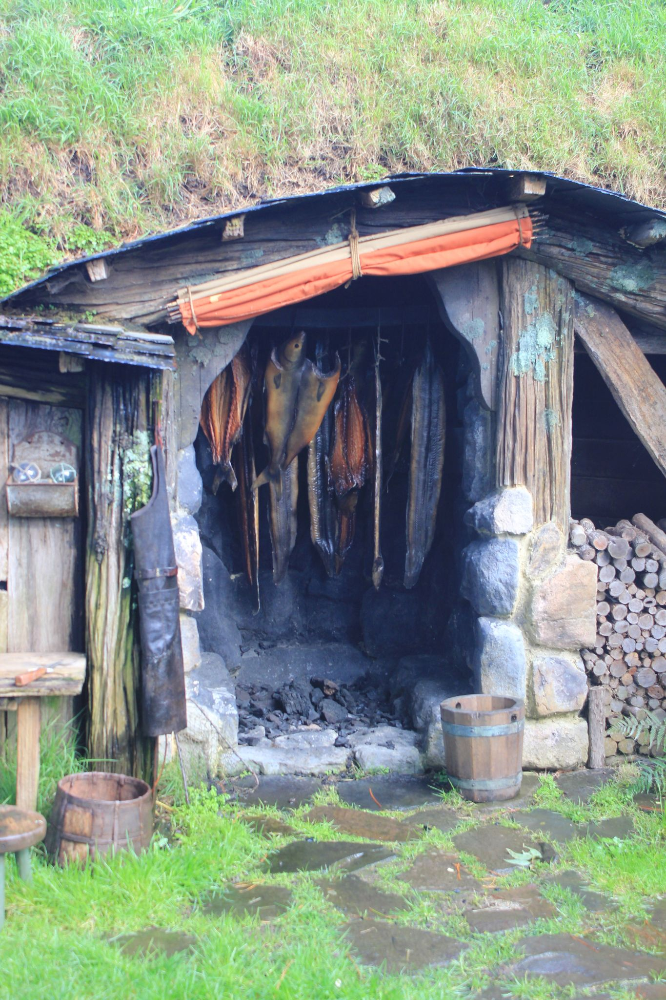

Hobbiton
Pictures

Place
Is a significant location used for The Lord of the Rings film trilogy and The Hobbit film trilogy. It is situated on a family run farm about 8 kilometers in Waikatao, New Zealand, and is now a Tolkien tourism destination, offering a guided tour of the set.
How to get there?
About 2 hours from Auckland and one hour from Rotorua. You can rent a car and drive here on your own or you can get a guided tour to shuttle you back and forth. Often times tour companies pair this visit with the Waitomo Glowworm Caves on a day trip from Auckland. You can also take a bus from Auckland for about NZ$50-60, but this is your slowest option taking approximately 3 1/2 hours. You will need to arrive at the main Hobbiton entrance and check in before taking a shuttle bus to the Alexander Farm.
Other Spots
In New Zealand, there are great spots for tourist in their islands and towns in the country. Lake Taupo and Tonagariro National Park, Queenstown, Rotorua, and Mount Cook National Park.